Project Video
Abstract
Feed-forward 4D reconstruction enables efficient creation of renderable driving scenes for autonomous driving simulation. However, most existing methods rely heavily on dataset-provided cameras, LiDAR depth, or 3D box annotations, limiting their applicability to unannotated driving videos. Pretrained visual models can predict cameras, depth, and object tracks from RGB alone, but their geometry is mutually inconsistent: multi-view predictions come in short windows with independent scales and frames, while monocular depth is metric only per image. Our key insight is that, once reconciled into a single metric frame, these priors can replace dataset annotations for feed-forward 4D reconstruction. We present FreeForward4D, which calibrates overlapping prediction windows against monocular metric depth and registers them into one frame across time. On this geometry, 2D tracks are associated across cameras in 3D, and objects move through hierarchical motion that combines a shared object velocity with local Gaussian corrections, so that both training and inference use only RGB videos. On Waymo, FreeForward4D achieves 27.66 dB PSNR and 0.836 SSIM while recovering metric-scale cameras and depth without scale alignment. It surpasses STORM, SLARM-F, UFO, DGGT, and StreetForward, which rely on dataset annotations, in full-image PSNR and attains the best RGB fidelity on 8-second windows. RGB-only fine-tuning further adapts the framework to nuScenes and Argoverse 2. Code will be released.
Demo Videos
More scenes
Top: rendered RGB. Bottom: object Gaussians. Select a scene to compare its rendered RGB, depth, and object Gaussians in the player above.
Quantitative Results
FreeForward4D is the only method here that uses no dataset annotations in either training or testing. It ranks second in full-image and dynamic-region PSNR on 2 s clips and first in full-image PSNR and SSIM on 8 s clips among the methods compared below.
| Method | Annotation-free | Dynamic regions | Full image | Depth | |||
|---|---|---|---|---|---|---|---|
| Train | Test | PSNR↑ | SSIM↑ | PSNR↑ | SSIM↑ | D-RMSE (m)↓ | |
| Pose-conditioned feed-forward methods | |||||||
| STORM (reprod.) | × | × | 22.04 | 0.623 | 25.85 | 0.803 | 5.47 |
| UFO | × | × | – | – | 27.26 | 0.825 | 5.45 |
| SLARM-F (reprod.) | × | × | 22.95 | 0.672 | 26.98 | 0.827 | 4.78 |
| PointForward | × | × | 25.01 | 0.768 | 28.48 | 0.861 | 3.35 |
| Pose-free feed-forward methods | |||||||
| DGGT | × | ✓ | 22.80 | 0.651 | 27.41 | 0.846 | 3.47 |
| StreetForward | × | ✓ | 24.30 | 0.827 | 27.01 | 0.818 | 3.14 |
| Ours | ✓ | ✓ | 24.36 | 0.729 | 27.66 | 0.836 | 7.06 |
| Method | PSNR↑ | SSIM↑ | D-RMSE (m)↓ | Feed-forward | Annotation-free |
|---|---|---|---|---|---|
| 3DGS | 19.57 | 0.517 | 14.42 | × | × |
| PVG | 22.90 | 0.619 | 18.24 | × | × |
| Street Gaussians | 21.69 | 0.609 | 13.17 | × | × |
| DeformableGS | 21.47 | 0.611 | 13.12 | × | × |
| GS-LRM | 21.81 | 0.584 | 7.37 | ✓ | × |
| STORM | 24.48 | 0.736 | 8.11 | ✓ | × |
| STORM (iterative) | 21.25 | 0.609 | 12.35 | ✓ | × |
| UFO | 27.39 | 0.830 | 5.10 | ✓ | × |
| Ours | 27.57 | 0.836 | 7.11 | ✓ | ✓ |
Bold / underline: best / second best. ✓: without dataset-provided geometric or object annotations; ×: with such annotations. –: unreported. 2 s: STORM and SLARM-F are locally reproduced and evaluated on the same 96,360 full novel-time images as Ours; other results are taken from the respective publications. DGGT reports D-RMSE after linear alignment to LiDAR, whereas Ours is evaluated at the predicted metric scale without alignment; StreetForward optionally supervises depth with ground truth. 8 s: 2,019 windows of 80 frames with 16 context frames; baselines are taken from UFO.
Method
FreeForward4D consists of two components, enabling training and inference from RGB videos alone without dataset-provided cameras, LiDAR depth, or 3D box annotations.
(1) Metric-consistent geometric prior integration. We calibrate the scales of overlapping multi-view prediction windows against monocular metric depth, register the windows into a single metric frame, and convert intrinsics to the reconstruction image grid. This provides consistent cameras, ray maps, and metric depth for reconstruction.
(2) Geometry-guided dynamic reconstruction. A feed-forward reconstructor predicts Gaussians from sparse context frames and the calibrated geometry. We associate 2D object tracks across cameras through their 3D centers, model dynamics with a shared object velocity and local Gaussian motion, and fuse observations using object-wise, source-aware temporal weights for novel-time rendering.
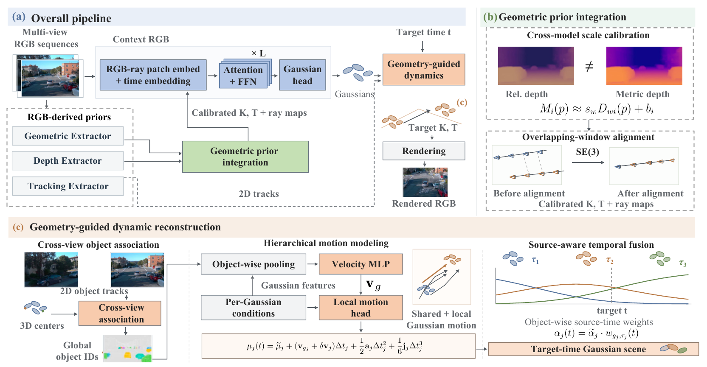
Qualitative Results
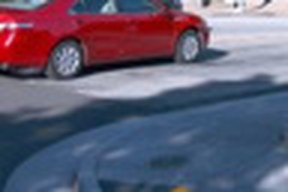
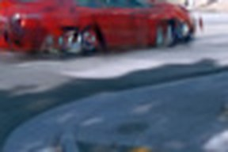
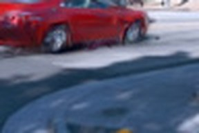
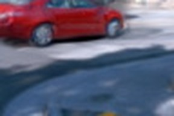
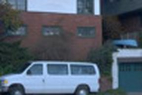
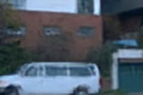
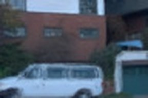
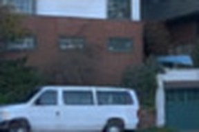
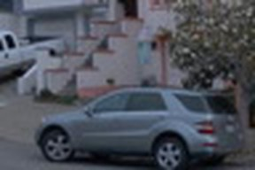
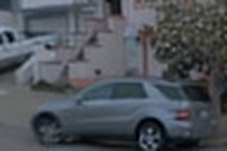
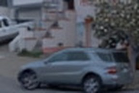
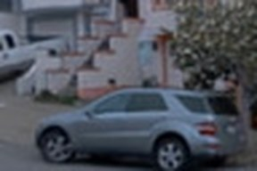
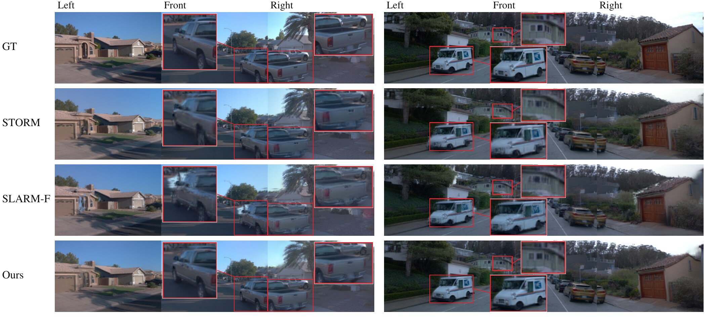
Gaussian Trajectories
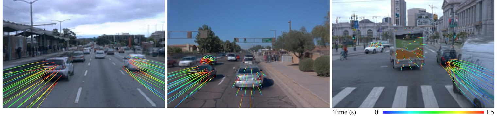
Scene-Level Static Reconstruction
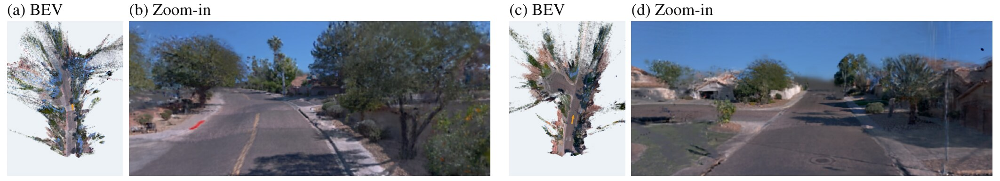
Citation
@article{guo2026freeforward4d,
title={FreeForward4D: Annotation-Free Feed-Forward 4D Reconstruction of Driving Scenes},
author={Guo, Luosong and Yang, Xiang and Li, Chaoyang and Gao, Ao and Shi, Jiangming and Qu, Yanyun and Zhang, Zhizhong and Gong, Jingyu and Xie, Yuan},
journal={arXiv preprint arXiv:2611.24007},
year={2026},
eprint={2611.24007},
archivePrefix={arXiv},
primaryClass={cs.CV},
url={https://arxiv.org/abs/2611.24007}
}